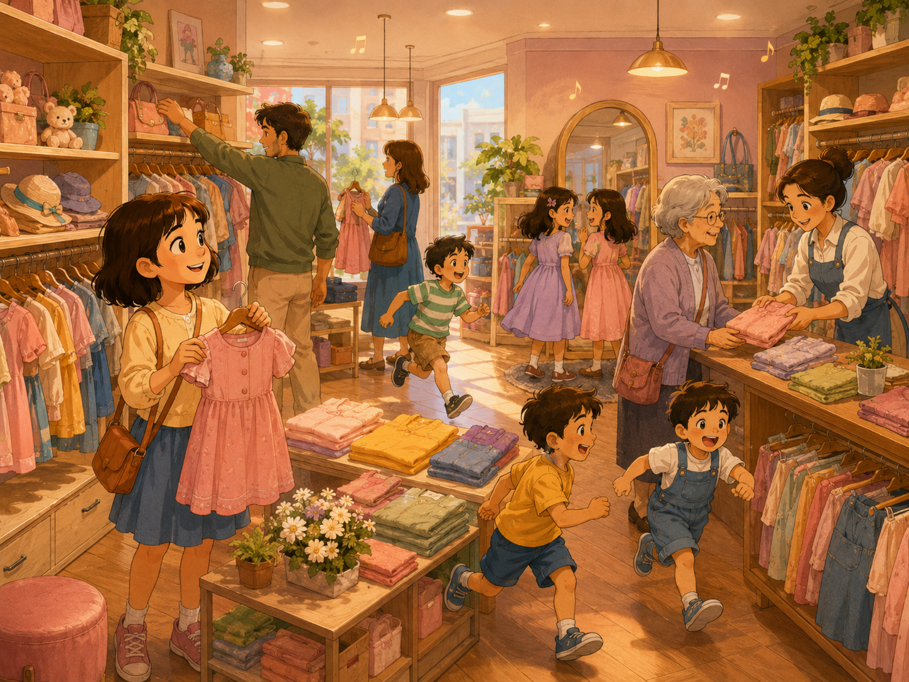
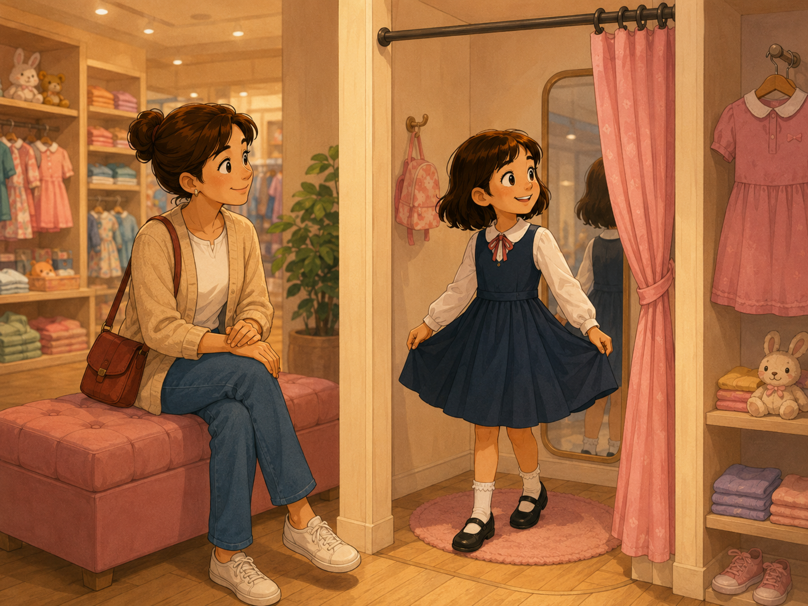
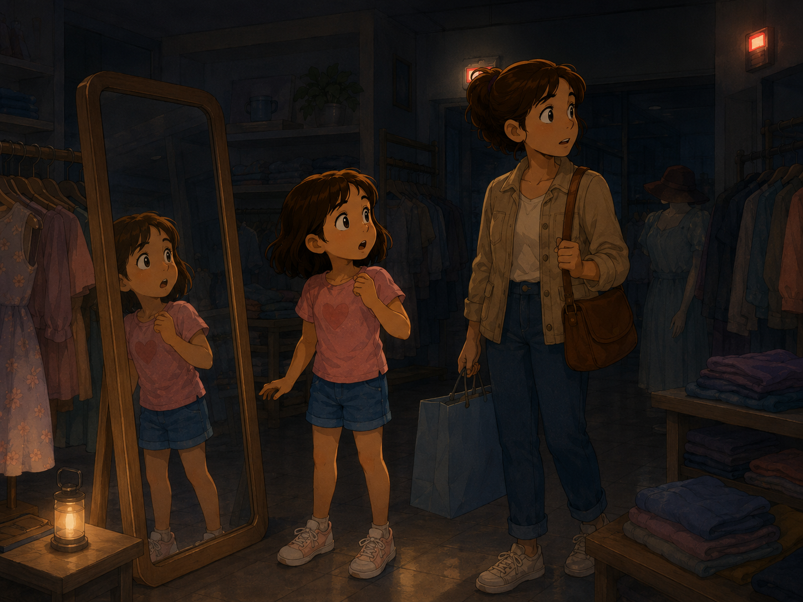
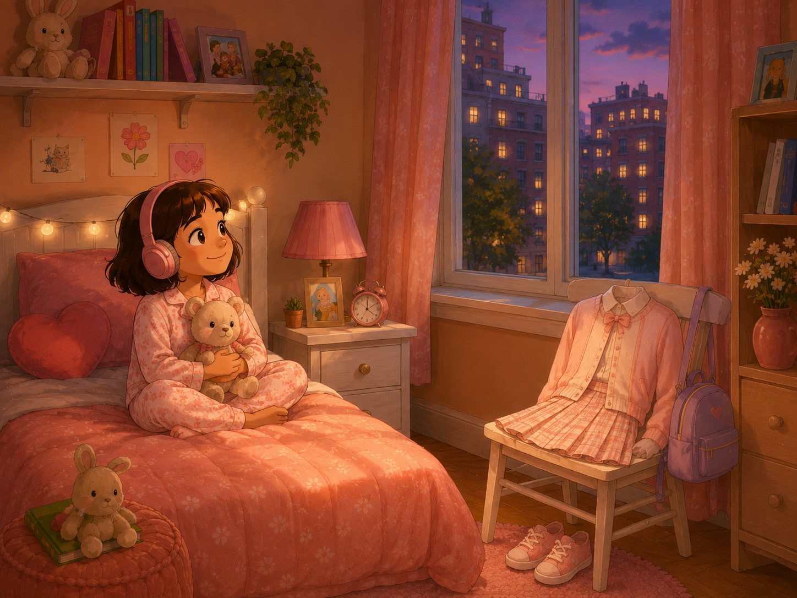
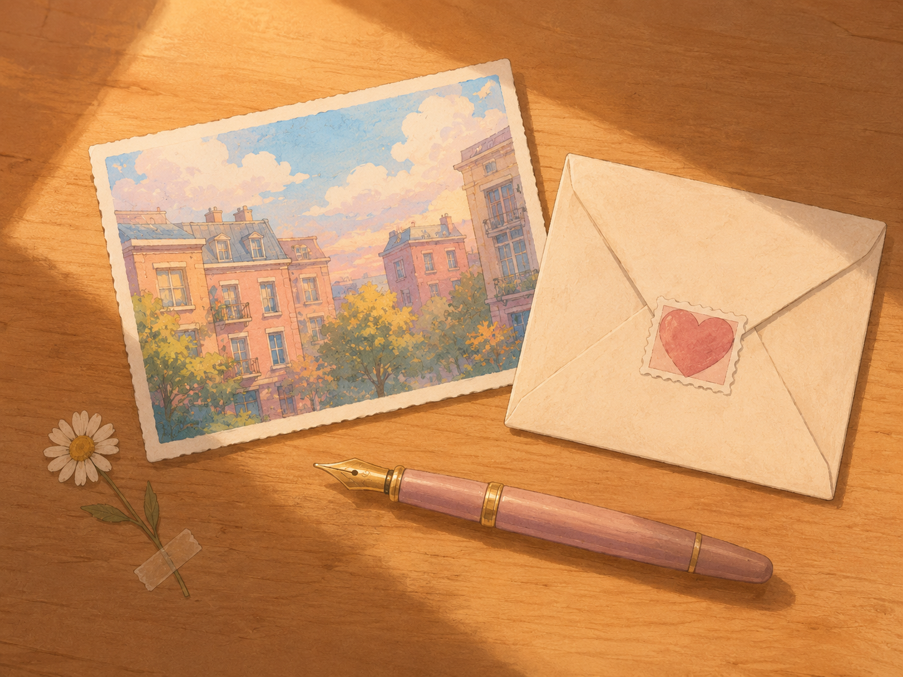
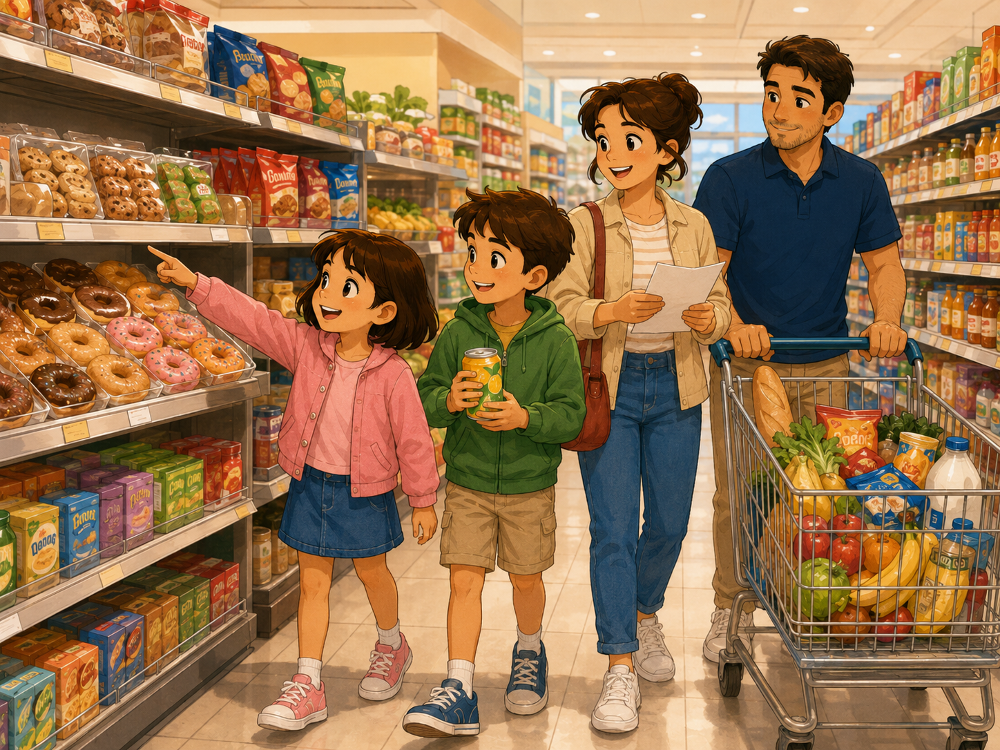
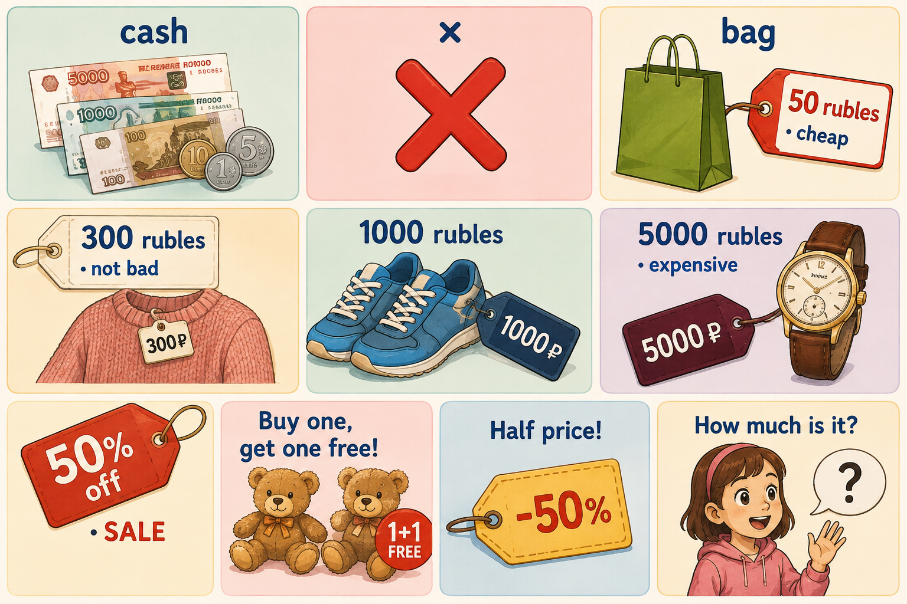
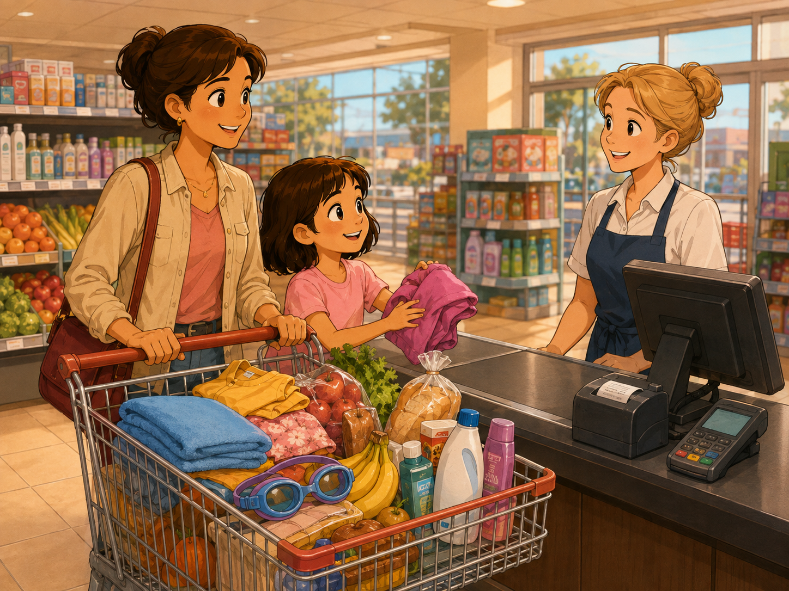
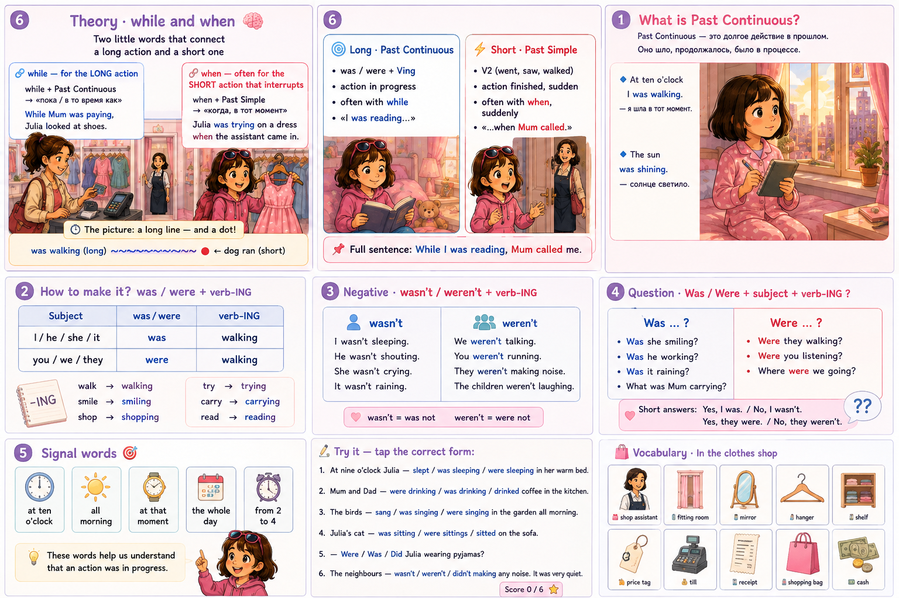
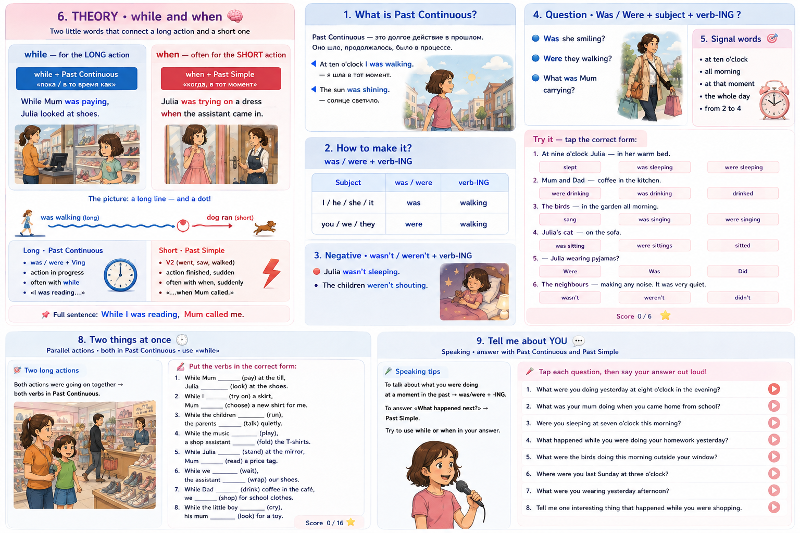

Tap and ask Julia:
👀 Notice the verbs — yesterday I went, I got — that is Past Simple. Today we will meet a new friend: Past Continuous. 🌀
📖 Tap any line to hear it. Notice all the -ING verbs! 🎯
At ten o'clock Mum and I were walking to the mall.
The sun was shining and the sky was blue.
The birds were singing in the little trees. 🐦
Mum was carrying her small handbag.
I was holding her hand and I was smiling. 😊
Some children were riding bikes past us. 🚲
Suddenly a little brown dog ran across the road! 🐕
I laughed and pointed at it. Mum smiled too.
were + verb-ING.was + verb-ING.
📸 Look at the picture. When Julia and Mum walked in, everyone was doing something:
1. Music __ from the ceiling. 🎵
2. Many people __ between the shelves. 👥
3. A little boy __ near the door. 😢
4. A shop assistant __ an old lady. 👵
5. Two girls __ in front of a mirror. 😂
6. Mum __ at some skirts. 👗
7. I __ a new shopping bag. 🛍️
8. The sun __ through the big window. ☀️

when, suddenly, at that moment.
👗 Six little moments in the shop — choose the right form:
-ing form. Little word: while.
✍️ Put the verbs in the correct form:

📖 Read the story and choose the right form for each verb:
while or when in your answer.
🎤 Tap each question, then say your answer out loud!

🎧 Tap ▶ and just listen. Don't read the text yet! Close your eyes if you want.

went · bought · was trying · were looking · saw · said.
Tell Grandma about your shopping day (real or made-up). Try to mix Past Simple and Past Continuous.
Dear Grandma! Yesterday Mum and I went to a big shop for school clothes. While Mum was paying at the till, I was looking at some pink sneakers. Suddenly the lights went out and everybody stopped! I was a little scared, but Mum held my hand and smiled. After a minute the lights came back on and we all laughed. It was a funny shopping day! Love, Julia 💌
a + container + of + food.Tap one word on the left, then its pair on the right.
Tap the word that is different from the other three.

👧 Julia: Mum, look at these donuts! They look so soft and sweet.
👩 Mum: Maybe we can buy a small box for after the swimming pool.
🧒 John: And look! There is chocolate ice cream!
👨 Dad: We already have ice cream at home.
👧 Julia: But this one has chocolate and strawberry flavours together!
👩 Mum: Julia, we still need real food for dinner. What about pasta and salad?
🧒 John: Dad, can we get nuggets and french fries?
👨 Dad: Not today. But we can buy a packet of cookies and a bar of chocolate.
👧 Julia: Yay! Best shopping trip ever! 🎉
-'s — this comes from the old name «the baker's shop», «the chemist's shop».Tap the shop on the left, then the product on the right.


👩💼 Assistant: Good afternoon! Did you find everything you needed?
👩 Mum: Yes, thank you. We would like to pay for these things.
👩💼 Assistant: Of course. Please put them on the counter. One moment… So that's a T-shirt, two packets of cookies, a jar of jam, a bottle of shampoo and a pair of swimming goggles.
👩 Mum: How much is it in total?
👩💼 Assistant: Let me check… That will be 1,800 rubles. But you have 10% discount today, so it's 1,620.
👧 Julia: A discount! That's lucky. 🍀
👩 Mum: Great. Can I pay by card?
👩💼 Assistant: Yes, of course. The card machine is here.
👩 Mum: Thank you. Could I have a bag for these things?
👩💼 Assistant: Sure. Here is your receipt. Have a lovely day!
👧👩 Julia and Mum: Thank you! Bye! 👋

| Subject | was / were | -ing verb |
|---|---|---|
| I | was | walking |
| he / she / it | was | walking |
| you / we / they | were | walking |
wasn't / weren't| I / he / she / it | wasn't | walking |
| you / we / they | weren't | walking |
was / were + verb-ING. Don't forget the -ing!
wasn't / weren't + verb-ING. That is the short form of was not / were not.Was / Were before the subject.
Tap a phrase → then tap the basket where it belongs.
while → the long action is next → -ING form.when → often a short thing happens next → Past Simple (V2).
Subject + was/were + Ving + …Was/Were + Subject + Ving + …?
A busy Sunday for the Simarzin family
Last Sunday, while the birds were singing outside and the sun was rising over the little pastel town, Julia woke up at half past eight. She was not in a hurry, because it was Sunday and there was no school. She stretched, put on her pink slippers, and looked at the calendar on the wall. Today the whole family was going to a big shop near the railway station, and later in the evening she and her brother John had swimming pool practice at five.
When Julia came downstairs, Mum was already writing a shopping list at the kitchen table, and Dad was making omelette and coffee. John was sitting on the floor, playing with a red toy car. «Good morning, everyone!» Julia said, and hugged Mum.
At half past ten the family arrived at the shopping mall. The mall was very busy: mothers were pushing trolleys full of food, children were running between the shelves, and shop assistants were talking to customers. Julia and John immediately ran to the food aisle, where they saw a big red sign: «Buy one, get one free!» «Look, Mum, donuts!» John shouted. «And chocolate ice cream!» Julia added quickly. Mum laughed and said, «Only one small box each — we still need real dinner food.»
While Dad was choosing a bottle of shampoo and Mum was picking a jar of strawberry jam, Julia was trying on a beautiful pink hoody in the clothes section. It was 50% off — a real discount! The shop assistant smiled at her and said, «This colour really suits you.» At that moment John was somewhere near the toy shelf, quietly hiding a small teddy bear behind his back.
Suddenly, at exactly three o'clock, the lights in the shop went out! Everything became dark. A little boy near the till started to cry, but Julia was brave. She held Mum's hand and did not move. After only a quarter of a minute the lights came back on, and everybody in the shop clapped and laughed.
Julia and her family paid at the till, got a long receipt, and left the shop with three big paper bags. On the way to the car, John finally showed the teddy bear he had bought with his own pocket money — as a present for his little cousin. Julia smiled at him and thought: «Today was the best Sunday of the summer.»